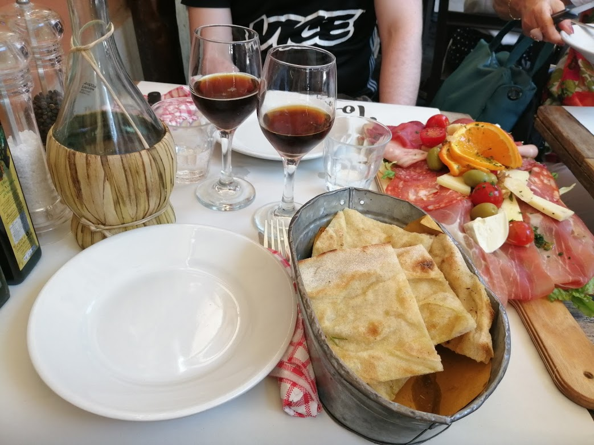
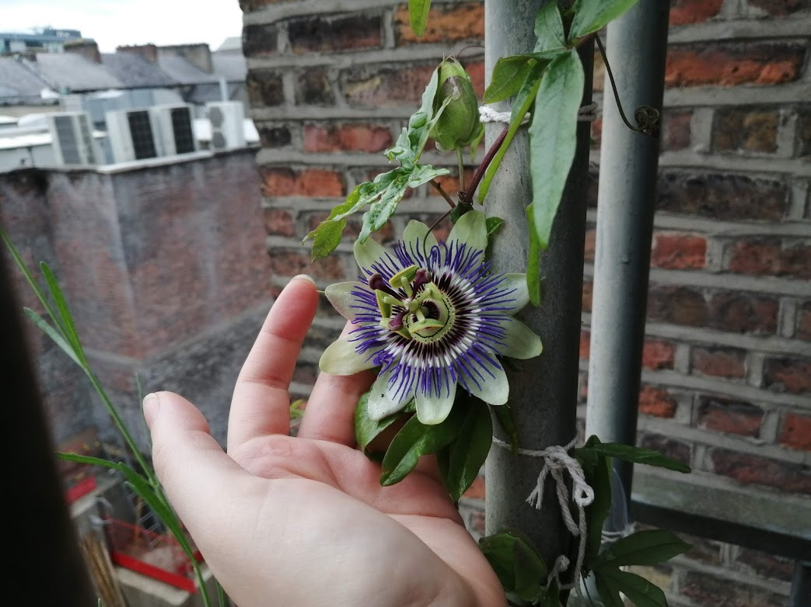

Food & wine
My origin countries and my background studies make me a bit of a foodie. I love to experience food from different countries and to discover interesting wines.

Gardening
I like to plant every seed I find in my kitchen or while walking in a park. My little apartment is full of plants and I grow vegetables and fruit in my balcony.Movies & TV series
Between a project and another I like to relax on my couch watching tv series and movies. So besides my skills I could offer you also good advices on what to watch in your spare time.